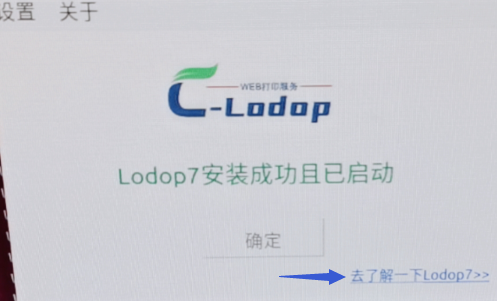

linux版的使用
参考http://www.c-lodop.com/download.htmllinux版
根据CPU型号安装对应的linux版安装程序
终端里运行 sudo ./lodop install
参考http://www.c-lodop.com/download.html
linux版，在下载中心其他版本里
终端里运行下 install.sh
运行 install.sh 或者 直接在linux桌面双击lodop
支持国产化环境吗
参考http://www.c-lodop.com/download.html
linux版
CPU是什么型号的，根据CPU架构安装对应的linux安装程序
运行 install.sh 或者 直接在linux桌面双击lodop
或终端里运行 sudo ./lodop install
linux版支持的cpu
目前仅支持x86 64架构和arm架构的cpu，mips64架构的正在研发中
国产CPU（支持第一类）：
Linux操作系统CPU架构分类：
第一类：x86或amd64架构：
支持中国海光、上海兆芯、美国Intel、AMD
第二类：mips64架构：
支持中科院龙芯、北京君正
第三类：arm64架构：
支持华为鲲鹏(920)、国科大飞腾(2000/2500)、中标麒麟
统信非root,启用root权限安装
下载linux版，参考http://www.c-lodop.com/download.html
解压缩后 终端里运行 sudo ./lodop install
国产系统，支持鲲鹏，飞腾CPU吗
参考http://www.c-lodop.com/download.html
下载安装linux版，ARM架构的那个
国产系统，支持龙芯CPU吗
龙芯CPU是mips64架构，目前不支持，还在开发中
国产系统安装linux报错（飞腾CPU）
CPU是什么型号的
终端里运行 sudo ./lodop install试试
并发一下CPU型号
飞腾的安装带ARM字样的lodop7，http://www.c-lodop.com/download.html
解压缩后 终端里运行 sudo ./lodop install
运行这个试试sudo ./lodop install
访问http://localhost:8000欢迎页面试试
点欢迎页面的预览试试
麒麟990的CPU无法安装（华为电脑，系统银河麒麟）
参考http://www.c-lodop.com/download.html
下载安装linux版，ARM架构的那个
用roor权限测试下
终端里运行下xhost si:localuser:root
然后运行 sudo ./lodop install
麒麟990（Kirin990）的CPU安装提示：Authorization required,but no authorization protocol specified（客户实测有效）
终端里运行下xhost si:localuser:root
运行这个root后，再用sudo ./lodop install试试
---------资料----------------
xhost si:localuser:root
sudo your-graphical-app
Newer systems by design don't allow graphical applications as root (it's a Wayland thing). Workaround:
xhost si:localuser:root
sudo your-graphical-app
---------资料结束----------------
linux版lodop7两种安装方法
# Install method 1,execute this on terminal(安装方法1，在终端桌面执行如下语句):
sudo ./lodop install
#
#
#
# Install method 2(安装方法2):
# double click "lodop" in this directory on linux desktop of root user(在root用户桌面，双击安装目录下的lodop主文件)
---------以下之前的------
---------之前的------
linux版支持的cpu（ARM架构发布之前）
目前仅支持x86 64架构cpu 还不支持arm架构的 后期有计划
国产操作系统安装了，打印设计和模板的打印维护打开后就只是预览了
linux后续版本才能有设计和维护功能，目前还不行
开发的时候大概调好位置，然后可以把位置参数给用户去细节调整，不能做模板打印维护了。
例如INITA前两个参数可以控制整体偏移。
linux桌面版有64位的吗
参考http://www.c-lodop.com/download.html
linux版，在下载中心其他版本里
安装最新版，这个是64位的。
之前的版本下载中心发行的是32位的，由于大部分都是64位操作系统，所以目前下载中心提供的是64位的。
解压 执行.sh 提示找不到这个目录 是不是缺少依赖
64位系统，安装下面的依赖试试
sudo dpkg --add-architecture i386
sudo apt-get update
sudo apt-get install libc6:i386 libncurses5:i386 libstdc++6:i386
sudo apt-get install libgtk2.0-0:i386 libcanberra-gtk-module:i386 gtk2-engines-pixbuf:i386 gtk2-engines-murrine:i386
apt-get install libatk-adaptor:i386 libgail-common:i386
终端运行install.sh就提示.lodop 没有那个文件或目录
如果是64位系统 更新下面的
sudo dpkg --add-architecture i386
sudo apt-get update
sudo apt-get install libc6:i386 libncurses5:i386 libstdc++6:i386
sudo apt-get install libgtk2.0-0:i386 libcanberra-gtk-module:i386 gtk2-engines-pixbuf:i386 gtk2-engines-murrine:i386
apt-get install libatk-adaptor:i386 libgail-common:i386
命令行里执行
Linux版的怎么安装（ubuntu20.04，64位）
root用户登录系统 下载http://www.c-lodop.com/download.html linux版
解压缩 直接点击lodop文件
用root登录系统界面，参考下https://www.qedev.com/linux/296375.html
系统是中标麒麟桌面版的，dpkg这个指令是针对debian系列的系统，有没有针对rehat系列的指令
百度查找下试试，目前测试的都是debain系列 ubuant 银河麒麟 deepin的。
进入欢迎页面查看下
进入欢迎页面测试下：

树莓派的官方系统,安装报错,无法执行二进制文件
目前支持debian系列 在Ubuntu 银河麒麟 深度上测试成功。
银河麒麟版本 v4.0，统信uos操作系统，安装linux版时报错括号错误，syntax error:"(" unexpected,应该怎么解决
uos目前有些问题，暂时支持Ubuntu，麒麟等操作系统。
uos安装有问题
统信UOS还有些问题，主要是涉及该操作系统的权限管理规则，没法安装到统一目录下。
liunx版可以打印ofd文档吗
目前不支持ofd文件，liunx版本目前可以支持打印图片，图形，纯文本。
有支持信创平台的版本吗
新创平台用的是什么操作系统，是linux吗
（目前有几种：UOS、中标麒麟、银河麒麟）
参考http://www.c-lodop.com/download.html
linux版，在下载中心其他版本里
uos目前有些问题，试试在麒麟系统安装下试试。
中标麒麟（龙芯版）安装不了
龙芯版可能有些问题，需要是intel或amd处理器
目前仅支持 x86指令 需要是intel或amd处理器
Linux版的CPU指令集是 x86_64
目前测试支持银河麒麟，如果是龙芯cpu，目前还不支持
支持优麒麟吗
可以实际测试下，目前测试支持银河麒麟。
如果是龙芯cpu，目前还不支持
优麒麟，目前可能有些问题，后期会改进。
测试是否支持
可以实际测试下是否能正常安装使用，如果测试不支持或有问题，可以反馈下报错信息，操作系统版本的等信息。
后续版本可能会支持。